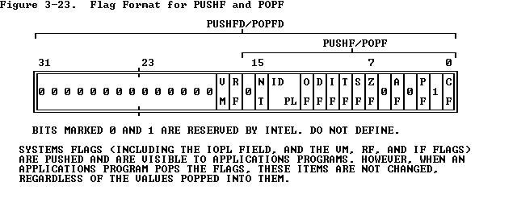

A program contains instructions for the coprocessor in line with the instructions for the CPU. The system executes these instructions in the same order as they appear in the instruction stream. The coprocessor operates concurrently with the CPU to provide maximum throughput for numeric calculations.
The 80386 also has features to support emulation of the numerics coprocessor when the coprocessor is absent. The software emulation of the coprocessor is transparent to application software but requires more time for execution . Refer to Chapter 11 for more information on coprocessor emulation.
ESC (Escape) is a 5-bit sequence that begins the opcodes that identify floating point numeric instructions. The ESC pattern tells the 80386 to send the opcode and addresses of operands to the numerics coprocessor. The numerics coprocessor uses the escape instructions to perform high-performance, high-precision floating point arithmetic that conforms to the IEEE floating point standard 754.
WAIT (Wait) is an 80386 instruction that suspends program execution until the 80386 CPU detects that the BUSY pin is inactive. This condition indicates that the coprocessor has completed its processing task and that the CPU may obtain the results.

up:
Chapter 3 -- Applications Instruction Set
prev: 3.8 Flag Control Instructions
next: 3.10 Segment Register Instructions